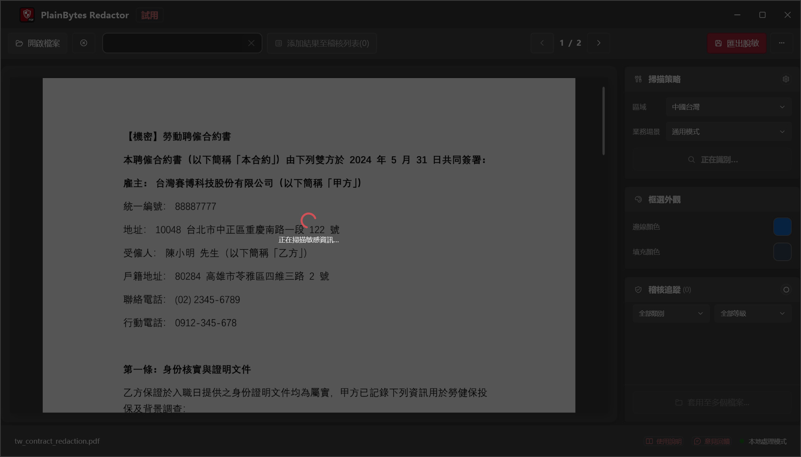
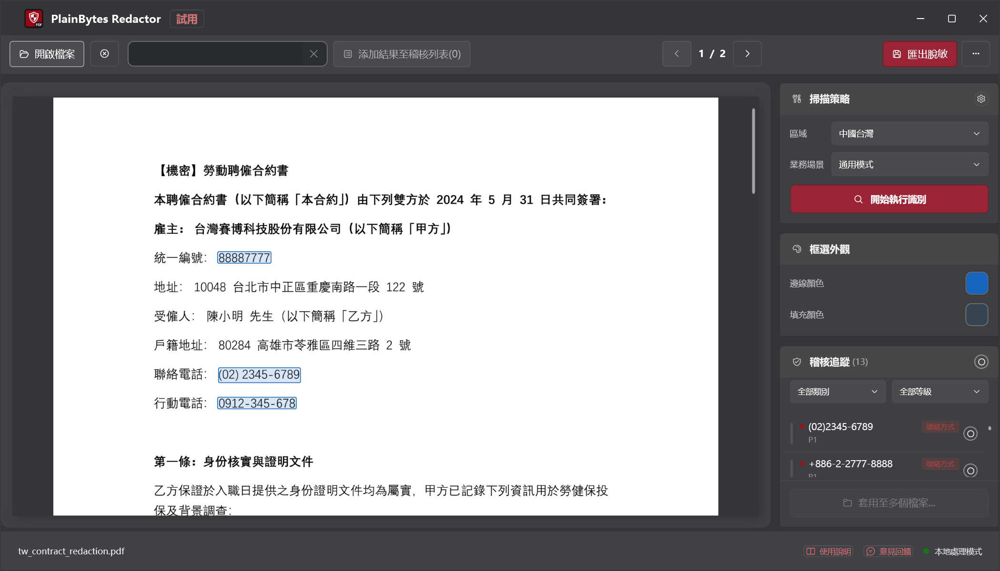
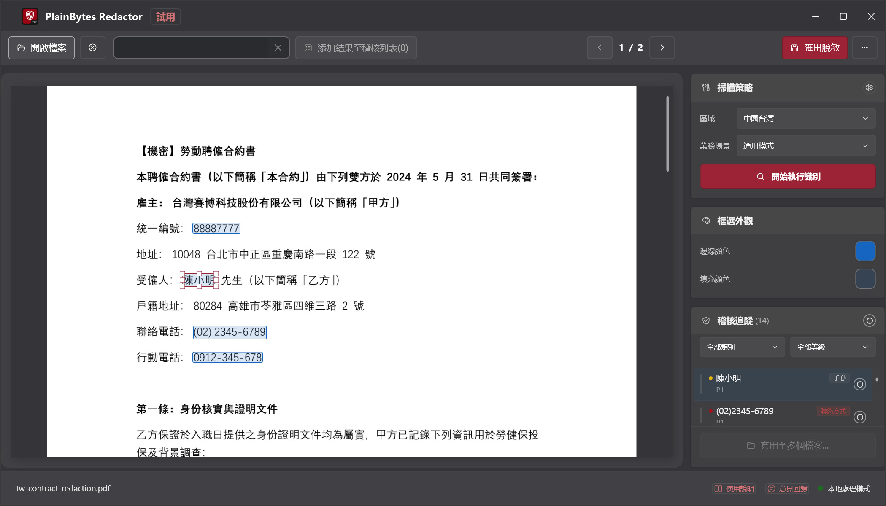
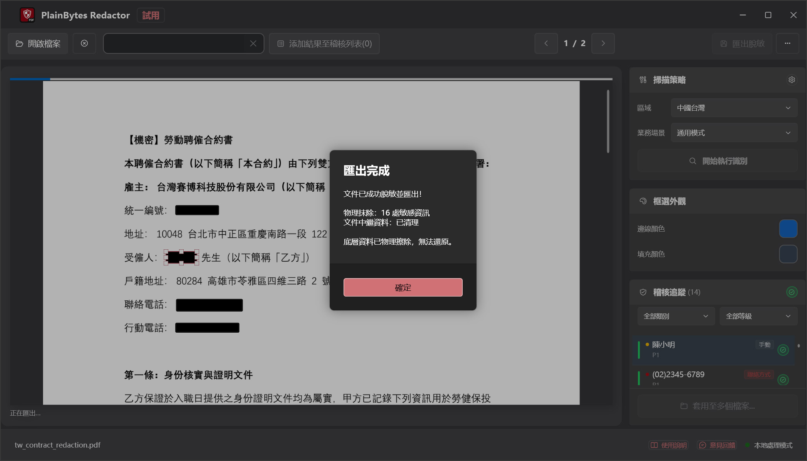

01
開啟並掃描
載入 PDF，依您所在地區的格式執行偵測。
PlainBytes Redactor
PlainBytes Redactor 完全在您的電腦上運行——不上傳雲端，沒有 AI 服務查看您的檔案。支援 28 國/地區識別碼格式的自動偵測，匯出前可人工複核。
工作原理

載入 PDF，依您所在地區的格式執行偵測。

查看每項標記及其風險類別。

定稿前可新增、刪除或微調。

內容與中繼資料永久移除。
大多數脫敏工具——尤其是 AI 驅動的——需要先把文件上傳到伺服器才能查找並刪除敏感資訊。對受保密義務、特權規則或審計獨立性約束的人而言，僅為脫敏一份文件就承擔這種風險並不合理。
PlainBytes Redactor 在您自己的裝置上完成全部偵測與處理。檔案不會離開您的電腦，無需帳號、無需同步、也沒有伺服器參與。
合規
本地優先架構，契合主要資料保護框架——處理過程中不向第三方傳輸資料。
支援履行個人資料保護法對個人資料安全維護及刪除之要求。個人資料從 PDF 內容串流中永久移除，處理過程中不傳輸至任何第三方。
個資安全維護符合資通安全管理法對文件處理安全措施之要求精神。完全本機處理確保機敏個人資料不會傳輸至外部服務，有效降低資料外洩風險。
資訊安全防護隱私保護從產品設計之初即內建於核心架構中。本機處理、物理性資料刪除及無雲端依賴之設計，符合個資法第18條所要求之「適當安全措施」原則。
設計內建隱私保護說明：PlainBytes Redactor 為協助符合個人資料保護相關工作流程之工具，不構成法律建議，且未取得第三方機構之正式認證。
律師
在電子提交或共享證據材料前，脫敏社安號、財務資訊及其他 PII，無需將客戶檔案經第三方雲服務中轉。
會計師
在共享審計工作底稿、稅務申報或年終報告前，脫敏帳號、社安號及客戶財務細節，無需將客戶資料經第三方雲服務中轉。
人力資源團隊
與審計師、法律顧問共享或回應資料請求前，脫敏錄用函、離職紀錄或人事檔案中的薪資、社安號及個人細節。